AnyPortrait > Manual > Rendering to Render Texture
Rendering to Render Texture
1.2.0
Using a technique to store the game screen as a texture, you can express the signboard or mirror in the game.
You can also draw your character to the game's HUD, and there are many other ways to use it.
This technique can be implemented simply by specifying a Render Texture to the Camera's Target Texture property.
AnyPortrait uses Unity's basic rendering component, Mesh Renderer, so this technique can usually be applied without any problems.
However, based on some users' feedback, we have improved in v1.2.0 about problems that occur in special situations.
This page introduces how to render to a Render Textures, as well as some problems and solutions.
Render Using Render Textures
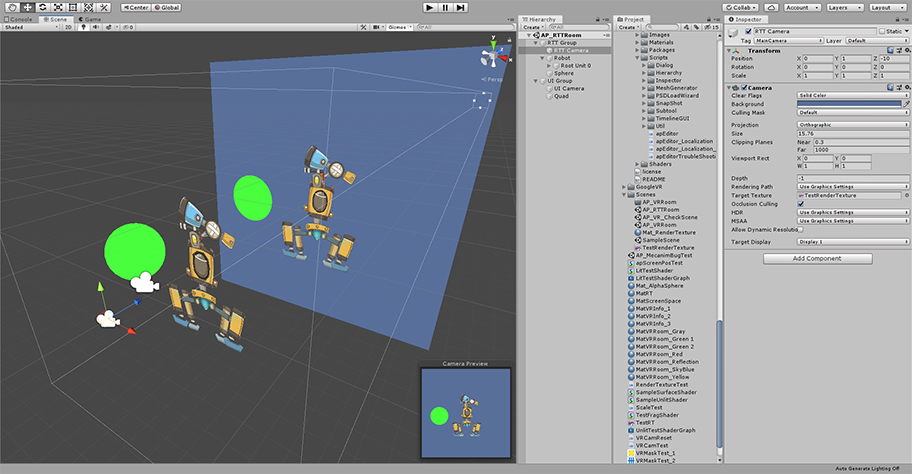
A scene is organized that renders using the Render Texture.
The scene has "Two cameras", "Character created by AnyPortrait", "Sphere Mesh" and "Quad Mesh with Render Texture".

In general, the way to use the render texture is as above.
The first camera renders the objects to the Render Texture.
The second camera renders other objects to the screen, including the Render Texture.
Let's set it up to render this way.

(1) Select the first camera.
(2) Change the Culling Mask from Everything to Default. Now only objects in the Default layer are rendered on this camera.
(3) With the Depth set to -1, assign the Render Texture asset to the Target Texture.
The Render texture asset must be created in the Assets folder beforehand.
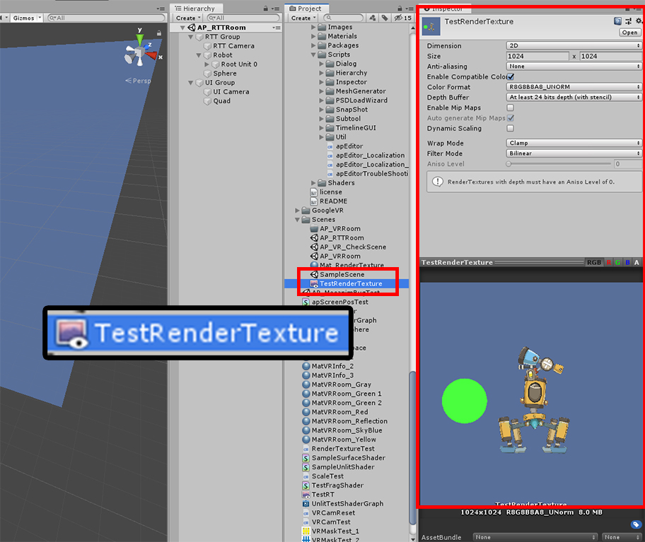
It is the properties of the Render Texture asset.
There may be some differences between platforms.
It is recommended to adjust the resolution accordingly.

(1) Select the objects to be rendered on the first camera, and (2) Check if the Layer is Default.

(1) Select the second camera.
(2) Change the Culling Mask to UI.
Now only objects whose layer is a UI are rendered, which is the "Quad Mesh with Render Texture".
(3) Specify Depth as a value greater than -1. Here we set it to 1.

(1) Select the Quad mesh to be rendered by the second camera.
(2) Change Layer to UI.
(3) Change the texture of the material to the Render Texture. The render texture at this time should be the same as applied to the first camera.
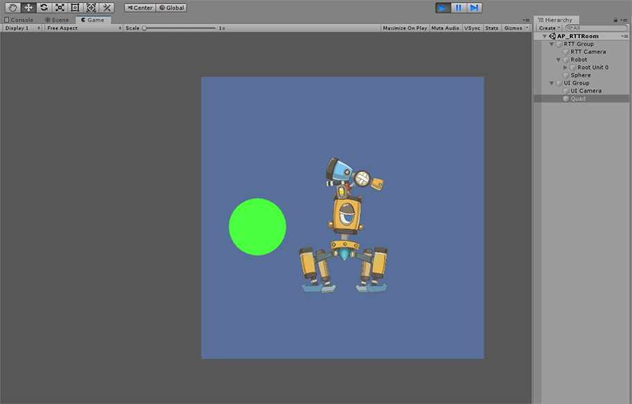
When you run the game, you will see that the Render Texture was successfully created and rendered, including the character created with AnyPortrait.
Render the Render Textures with a translucent or transparent background
Render textures can be made translucent or transparent.
If you make the camera's background property transparent, the background of the Render Texture will be transparent as well.
This makes it possible to render only characters without the background.
However, using AnyPortrait's default material will cause rendering issues.
Check out the descriptions below to learn about rendering issues and solutions.

(1) Select the first camera and select Background color with Clear Flags set to Solid Color.
(2) Change the Alpha channel of background color.
(3) You can see the background of the Render Texture becoming more transparent.
In this state, you can see that the AnyPortrait character rendered in the Render Texture is also transparent.
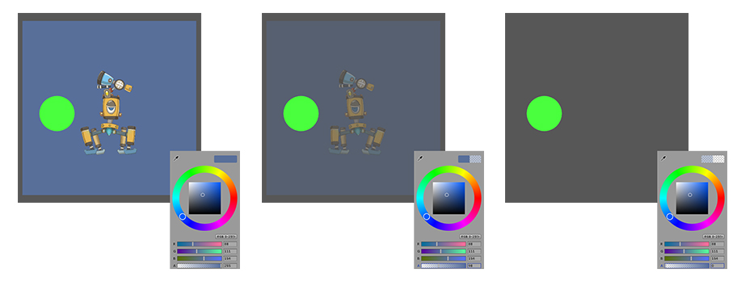
Let's compare how the characters of AnyPortrait are rendered based on the background color.
If the background becomes transparent, the character created with AnyPortrait will be transparent as well, while the green sphere will not change.
In normal cases, it should be rendered regardless of the transparency of the background.
This is an issue with Unity's shader properties, especially if it's written in Surface Shader.
Therefore, this problem can be solved by applying a material that uses a different shader.

Open the AnyPortrait Editor.
(1) Press the Material Library button.
(2) Select KeepAlpha Presets.
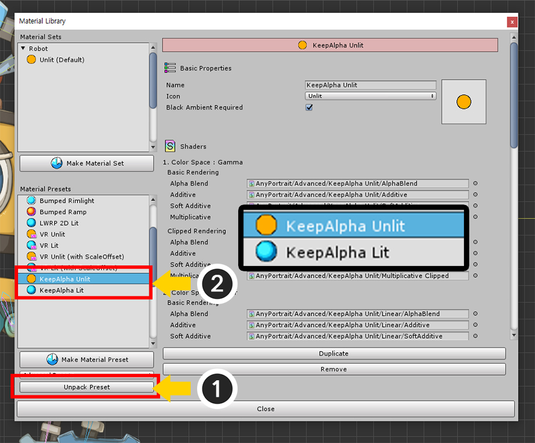
(1) Press the Unpack Preset button.
The Material Library closes with the new material preset installed.
Reopen the Material Library.
(2) Two material presets (KeepAlpha Unlit, KeepAlpha Lit) have been added.
Keep Alpha presets consist of shaders that add a "keepalpha" parameter to the regular Surface Shader instead of the existing "alpha" parameter.

(1) Press the Make Material Set button.

(2) Select KeepAlpha Unlit or KeepAlpha Lit preset.
Since there is no light in this scene, select the KeepAlpha Unlit preset.
(3) Press the Select button.

(1) Select the newly created material set.
(2) Press the Default Material button to select the default material.

Run the Bake process.
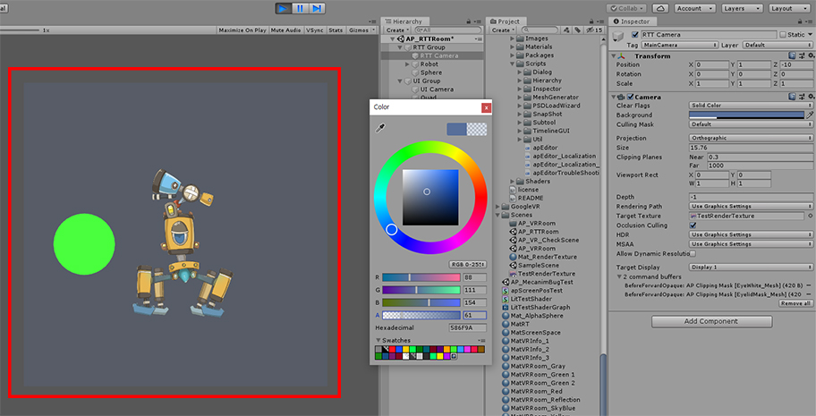
The character now is rendered properly even if the background is transparent.
Rendering simultaneously including Render Textures
When rendering to the screen, you may need to render not only the Render Texture but also the original character.
Basically, this is the same as "Rendering with multiple cameras."
Therefore, a similar problem occurs here as with VR rendering.
Let's see what happens and how to fix it below.

(1) Select the second camera to render on the screen.
(2) Change the Culling Mask option.
(3) Select the Default layer additionally with the existing UI layer selected.
Now objects in the Default layer will also be rendered to the screen.

When you run the game, you'll also be rendered in the Render Texture,
and at the same time, you'll see the original character and other objects rendered on the screen at the same time.
However, in this case, you can see that the clipping mask has been rendered strangely.
(This may look strange in the Render Texture, and vice versa.)
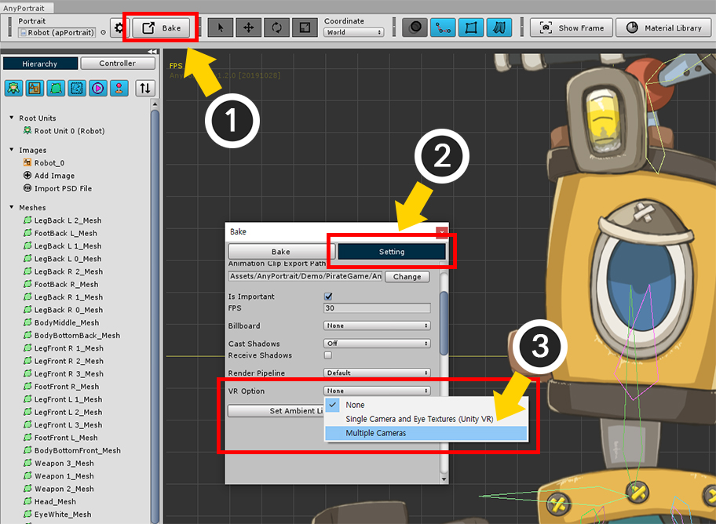
This problem is similar to the problem seen in VR rendering, so the solution is the same. (Related page)
(1) Open the AnyPortrait Editor and press the Bake button.
(2) Press the Setting tab.
(3) Change the VR Option value to Multiple Cameras.
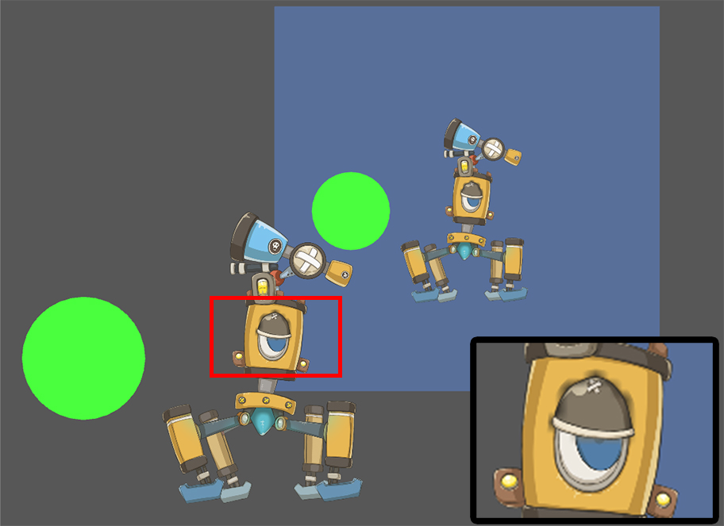
Now, you can see that both the Render Texture and the original character render properly.
However, when rendering with multiple cameras, the quality of the clipping mask may not be corrected,
so the clipped area may not be rendered neatly as shown above. (Related page)

You can solve this problem by increasing the resolution of the clipping mask.
(1) Select the Mesh Group.
(2) Select the Setting tab.
(3) Select the mesh to be the clipping mask. (Not the mesh being clipped.)
(4) Increase the value of Mask Texture Size.
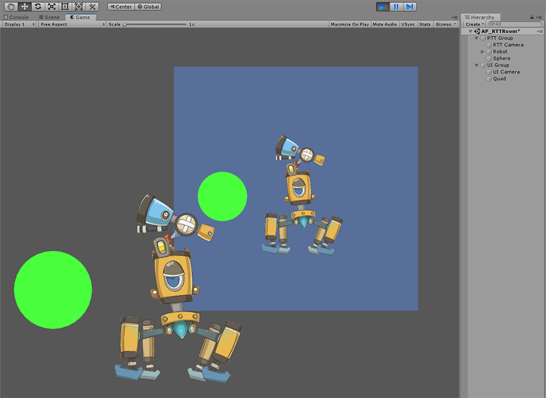
When you play Bake and run the game, you will see that the problem with the problem of clipping mask has been solved.
Troubleshooting Color Issues with Keep Alpha Materials
If you use the Keep Alpha material to create a render texture with a transparent background, the colors may appear strange.
You can see this problem if the image is translucent.
If the translucent image is placed on top of the opaque image, you can solve this problem by the following method.

We prepared an opaque purple mesh and a translucent blue mesh as above.

Since we are going to create a render texture with a transparent background, we applied the KeepAlpha Unlit material as described above.
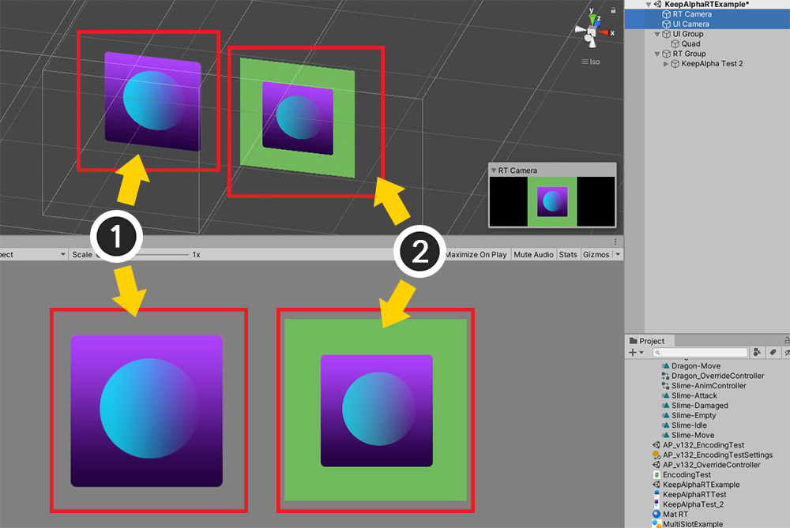
The scene is set up as above.
(1) The left is the original created with AnyPortrait.
(2) On the right is a quad mesh with a render texture applied.

(1) Select the camera that creates the render texture.
(2) Select the Background property, and (3) change the background color to gradually become transparent.
(4) You can see that the background color of the render texture changes to transparent, and it doesn't look much different from the original.

The problem is that the background color of the final rendered camera is not gray, not the background of the render texture.
(1) Select the camera that renders the screen.
(2) Let's change the background color to a color other than gray.
(3) On the render texture, you can see that the color of the translucent part of the mesh changes strangely.
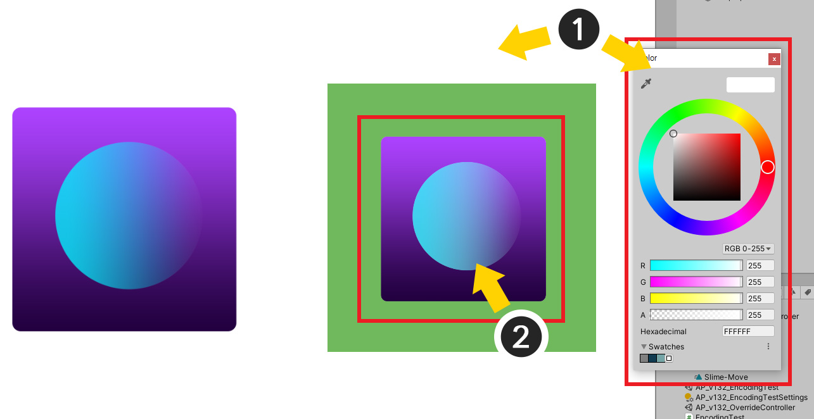
(1) If you change the background color to white,
(2) on the render texture, you can see that the translucent parts of the mesh are too bright.
This problem is occurred even if there is an opaque mesh behind it.
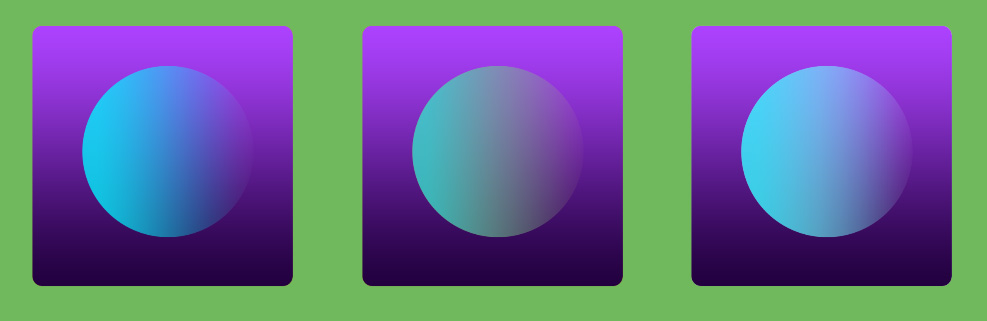
There are three cases.
The color distortion of the mesh is clearly visible in the render texture.

Since this is an issue with the Keep Alpha material, we need to change the material of that mesh to the original material.
Open AnyPortrait editor and change the material of the mesh with Setting tab selected in the mesh group.
(1) Select the translucent mesh.
(2) In the material setting, click the Use Default Material Set button to change it to OFF.

(1) Press the Change button.
(2) Select the default material Unlit (Default).
(3) Click the Select button to apply.

After executing bake and rendering again in Unity, you can see that the above problem is solved.
This solution is effective when you want to make the background of the render texture transparent when there is an opaque mesh behind it.